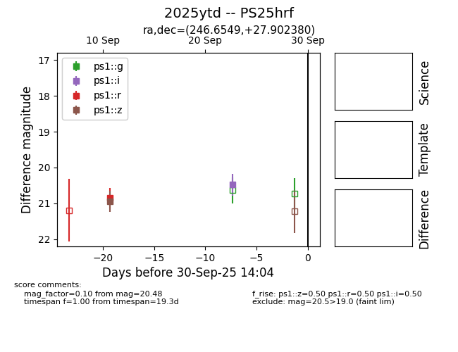

TNS: 2025ytd
YSE: 2025ytd
2025ytd (yse,tns)
PS25hrf (panstarrs)
equatorial (ra, dec) = (246.6549,+27.90238)
galactic (l, b) = (46.9820,+42.68449)

last ps1::i=20.48, ps1::r=20.85, ps1::z=20.94
1 ps1::i, 1 ps1::r, 1 ps1::z detections